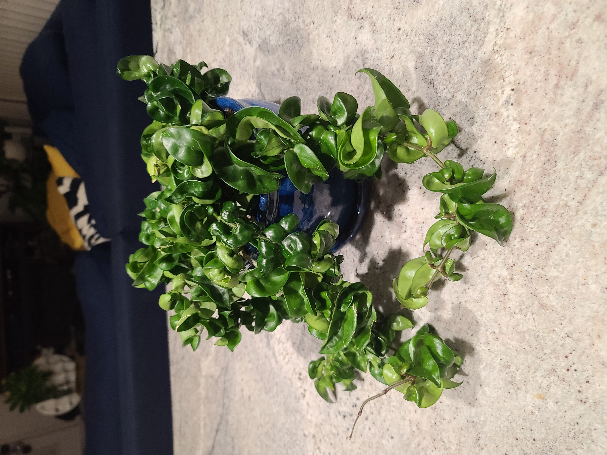
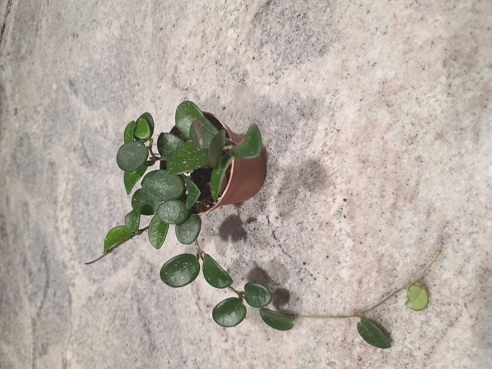
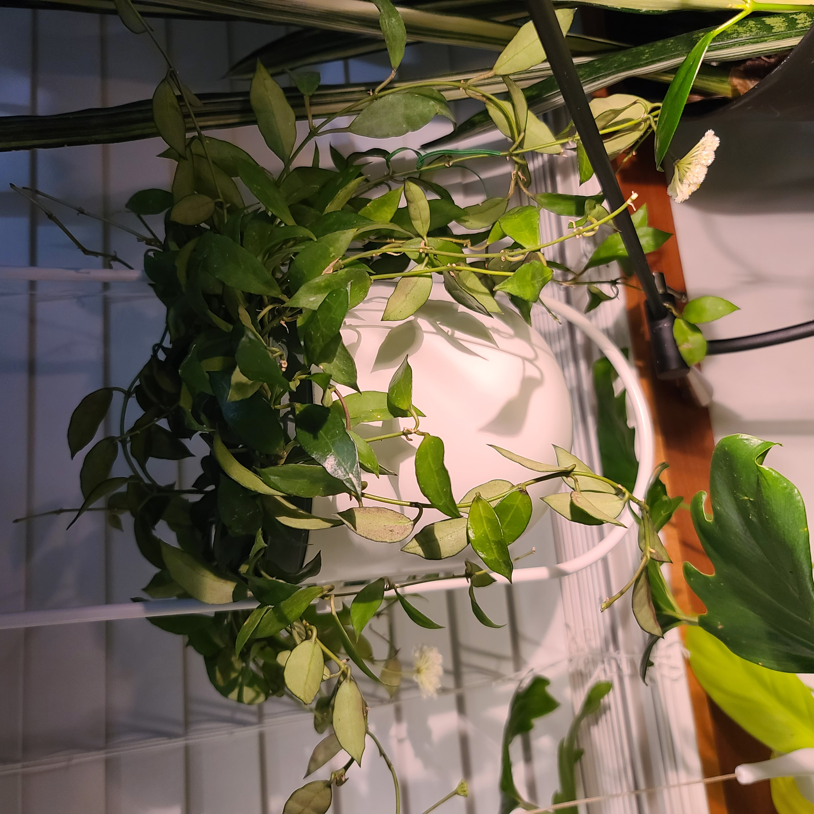
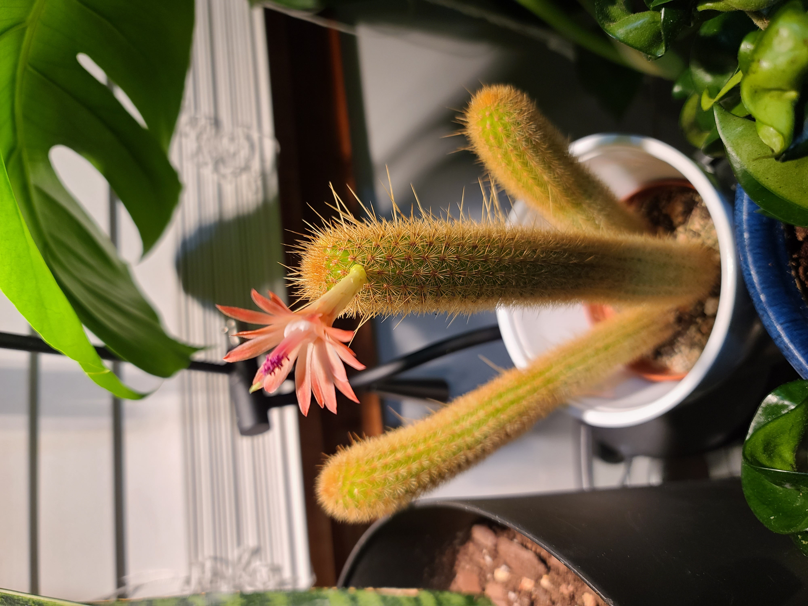
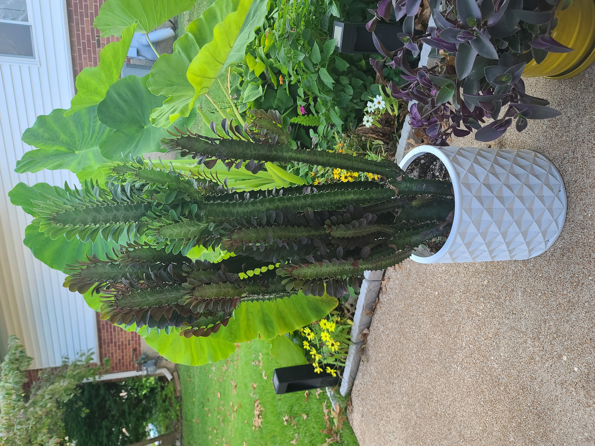
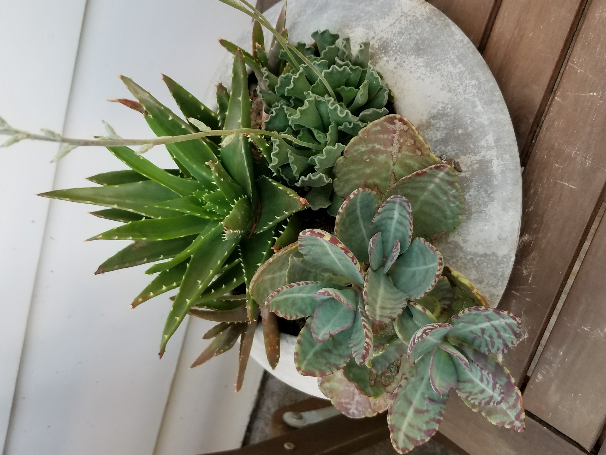
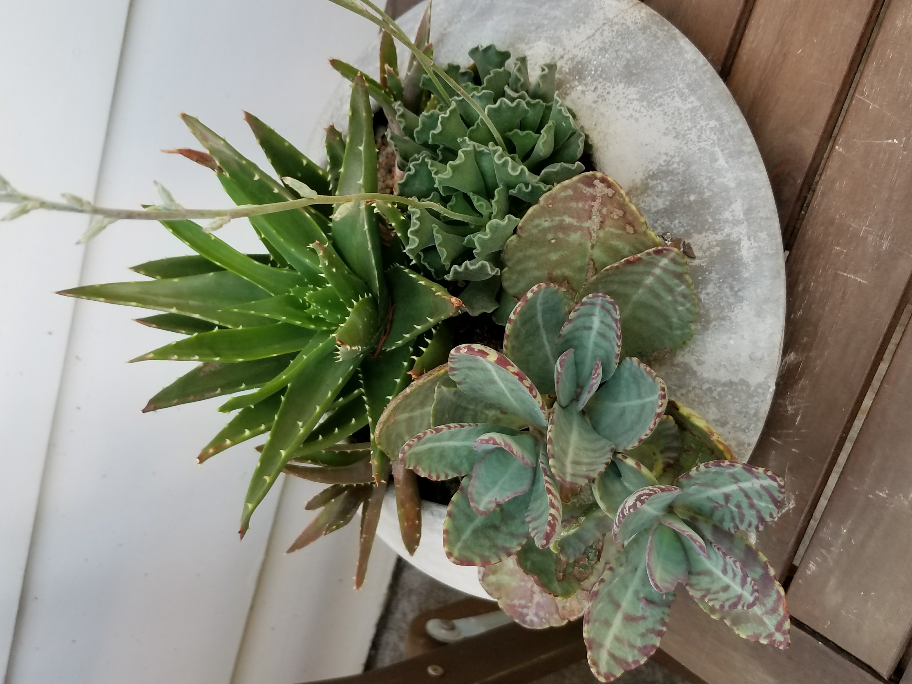
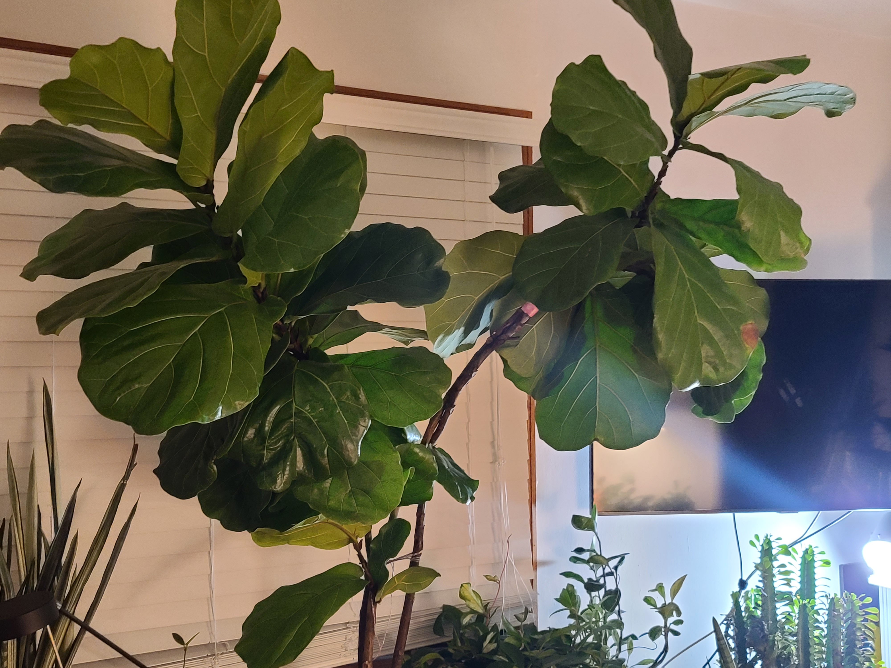
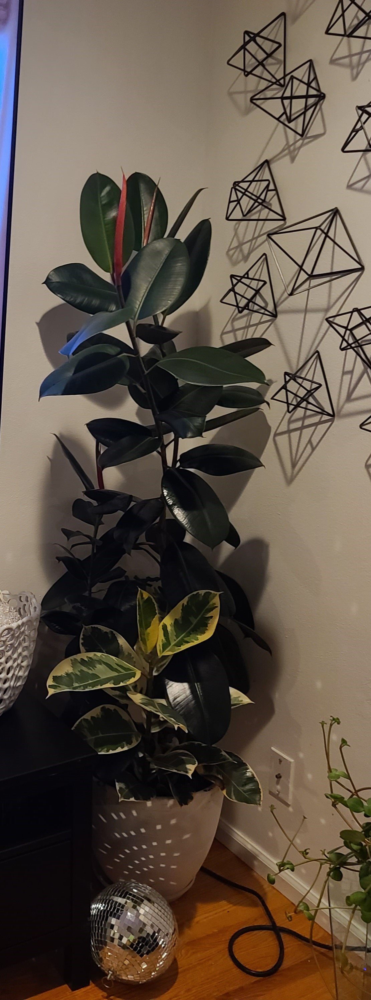

Hoya Collection
  Hoyas have quickly become my favorite houseplant. I have about 20 different species of hoyas in my collection. I began collecting hoyas much more in the last few years. My first hoya was a hoya carnosa tricolor. This plant genus is relatively easy to care for because they are non-fussy houseplants.
Cactus & Succulent Collection
  

I started collecting cacti because of their unique shape. Cactus are very forgiving plants. During the summer months, I place my cactus and succulents outside.
Ficus Collection
 My first plant was a Ficus lyrata, commonly known as a fiddle leaf fig. Its nickname derives from the leaf resembling a fiddle. The leaves of the plant are big and beautiful. Ficus loves a few hours of direct sunlight. Ficus elastic has always been one of my favorite indoor trees. This plant is a hardy statement, with thick dark foliage.